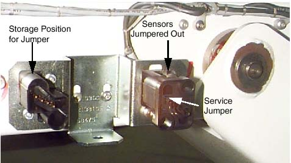

Operating Documentation
Direction 5193855-800, Rev# 4
LS 5.X RT Ltd. Access Service Information Adv
Operating Documentation |
TOUCH SENSOR (JUMPER) SERVICE JUMPER
During service, the table touch sensors must remain operable for the table to fully function. To operate the table with the covers removed, the sensors must be jumpered.
Illustration 1: Table Touch Sensor Jumpered Out
